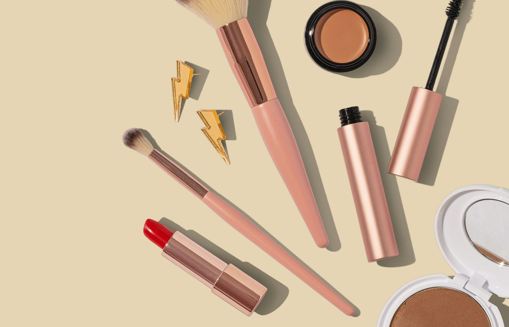
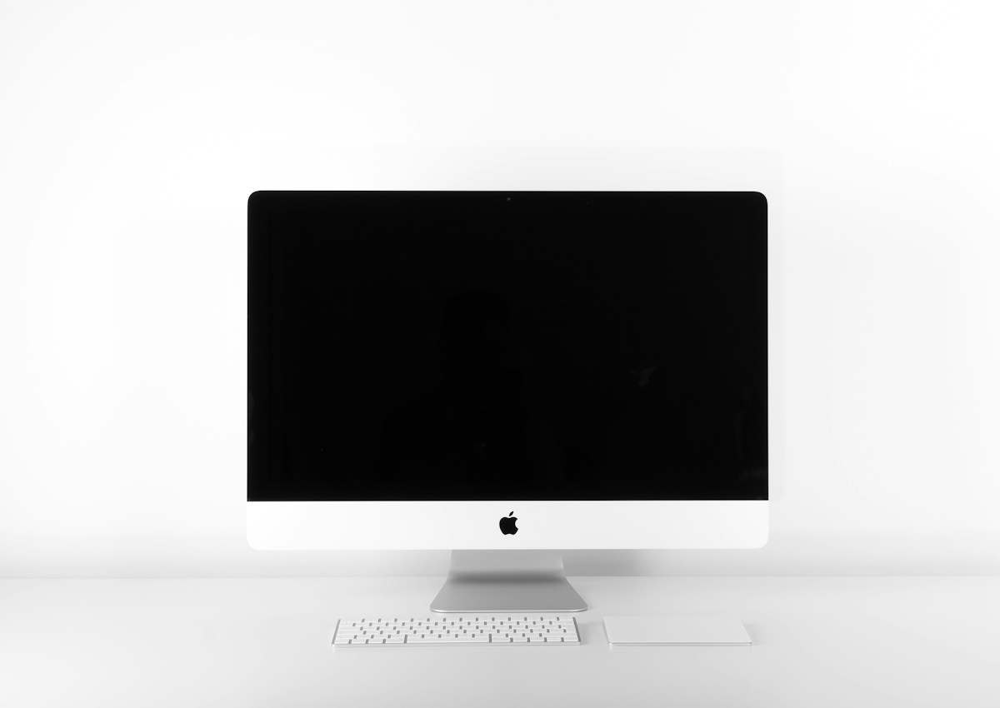

Продуктовый кадр должен продавать ощущение
В beauty-сегменте покупатель оценивает не только упаковку. Визуал должен передавать чистоту, текстуру, мягкость, доверие и желание попробовать продукт.

Светлая продуктовая сцена: чистый фон, мягкие оттенки и акцент на beauty-ритуале.

Минималистичная композиция подходит для карточек товара, баннеров и визуальных блоков лендинга.
Beauty product
Товарный визуал для beauty-бренда: clean-композиция, premium-свет, акцент на упаковке и готовность к использованию в digital-продажах.
Визуал должен быть красивым и полезным
Beauty-картинка должна работать в нескольких сценариях: карточка товара, баннер, social post, промо-кампания, hero-блок лендинга. Поэтому кадр собирается с запасом воздуха и понятной иерархией.

Кадр для premium-сегмента: минимум лишнего, максимум ощущения чистоты и качества.

Lifestyle-элемент добавляет теплоту и помогает представить продукт в реальном сценарии.
Один стиль можно развивать на всю линейку
После фиксации света, фона и композиции визуальный язык можно переносить на другие продукты: крем, сыворотку, маску, набор или сезонную кампанию.
Что входит в проект
Product hero, карточка товара, рекламная сцена, lifestyle-визуал, варианты фона и рекомендации по масштабированию линейки.
Beauty-визуал, который хочется открыть
Итог — чистая и коммерчески полезная визуальная подача продукта, готовая для e-commerce, рекламы и social.